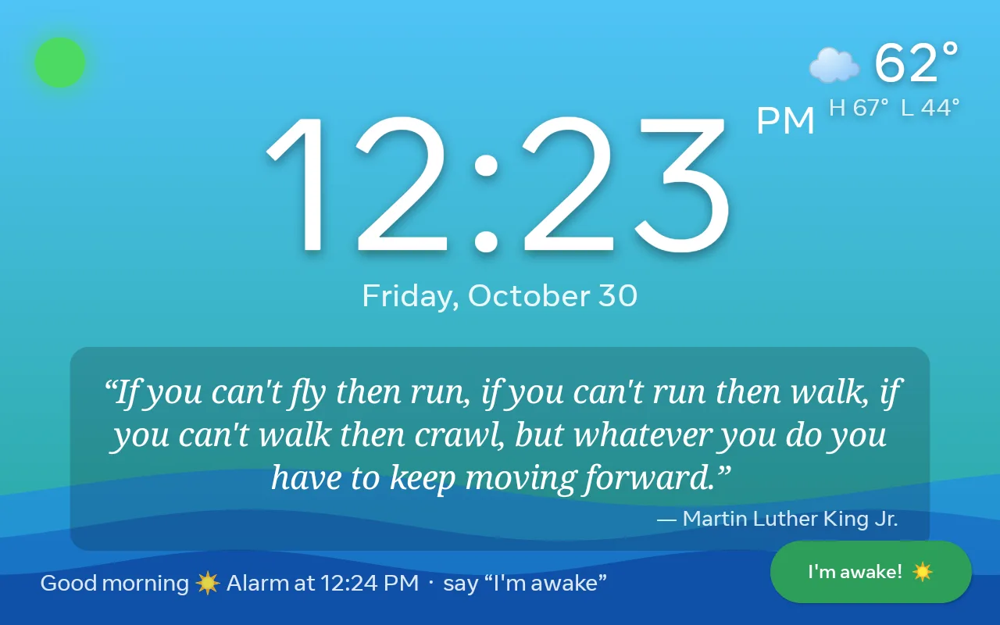
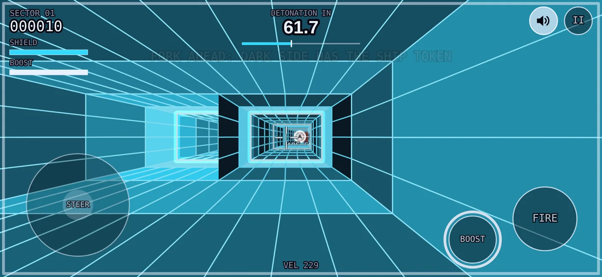

Recent projects
-
KidClock

An alarm clock for my daughter's room, running on a 2018 Meta Portal that unmetaportal freed from its Facebook login. It wakes her in two stages with a soft sound and the morning's quote, listens for "I'm awake" without any cloud, keeps the room dark at night, and shows the weather. Native Kotlin, no accounts, no camera.
-
Doomsday Tunnels

A tunnel flyer for phones, after Tunnels of Armageddon on the Apple IIGS. Steer, shoot and boost through colour-coded tunnels before the countdown hits zero, then post your score to a shared board. Once you have opened it, it plays with no connection at all. The scoreboard runs on a small Cloudflare Worker that keeps no record of who anyone is.
-
Hardhat Mac
A clone of Hard Hat Mac, the 1983 construction-site platformer, made for phones. Bolt the steel frame together, collect the lunchboxes and feed the crates into the hopper. The whole game is one HTML file with no build step.
-
Game of Life 3D
Conway's Game of Life in three dimensions, for Unity 6. The automaton runs in a compute shader and the live cells are drawn as glowing instanced cubes in a single indirect draw call. Any birth-and-survival rule can be set, cells can fade out over a few generations instead of dying at once, and a one-cell-thick grid gives you the classic 2D game back. Built AR-first for OpenXR; it runs on a desktop today.
A few more projects are incubating in private repos. They will turn up here once they are ready to be seen.
Before this
My GitHub account goes back to 2008. Most of what is there from those years is forks and patches from the Rails era, with a few experiments alongside. It is all still up.